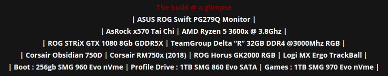

With XeroLinux no longer being a Distro, but a collection of Projects/Scripts, created with a simple goal in mind, making ArchLinux more approachable, easier to install and configure. That’s if you choose to use it, or even give it a try.
ArchLinux / KDE Plasma
I have so many great ideas in the pipeline, it’s crazy ! I love working with ArchLinux. It’s the most flexible Distro I have ever had the pleasure to work with. Allowing me to build things from the ground up without it being too complex, or getting in my way.
I also love working with KDE Plasma, simply because it’s so damn beautiful, and easy to work with. And since I am more of a visual old geezer, it fits my needs so well it ain’t a joke. That’s why I don’t see myself using anything else for a long time to come.
With the combination of those 2 elements, life on Linux has been a joyous one indeed. To know more about my projects, check the relevant pages out on this site. And feel free to let me know what you think of the new site design. I am always looking for ways to make it better as time passes.
I will do my best to keep contributing to this awesome community. Mostly targeting ArchLinux and KDE Plasma. But who knows what the future holds ? I sure don’t.
Cheers y’all 😀
Project
Some Info
The project is made of a few sub-projects. Below you will find the 3 I have finished and are ready for public consumption. More are on the way. Just keep coming back here for updates. Also feel free to suggest ideas on social…
The Toolkit.
This toolkit aims to be an all-in-one solution for post-installation, expediting your Arch setup. It’s offered as use at your own risk type of thing, with minimal support. You will have to rely on yourself and your own knowledge and ability to do research when it comes to the provided tools and your setup.
It’s crucial to clarify that this toolkit is NOT intended for custom Arch-Based distros. While some elements might function, I can’t ensure seamless compatibility due to potential conflicts arising from differing tweaks and repositories. To ensure optimal performance, it’s strongly recommended for use on a clean Pure-Arch install executed through the ArchInstall script. Nor will it provide Arch or DE/WM installations.
To find out how to use it and what it has in store, please head on over to toolkit’s Github Page and check out the Wiki for more detailed information.
Xero-Layan Rice
Well, I dunno how to describe this besides that it’s the best KDE rice I have ever created, in my opinion. It has survived many upgrades, without missing a beat. Now since Plasma 6 it has developed a few small quirks, nothing major though. I will be addressing them as I figure out how to fix them.
Until then, if you want to enjoy said rice on your system, feel free to teleport to Github to see how you can do that. And have fun. 😀
Xero-Plasma Install Script
Hmm… With the help of this script you will be able to install Plasma in one of 4 methods as you can see in the image below. Not only that, it will also install the GPU drivers and do necessary steps to get things working without you having to lift a finger. Oh yeah it will also fix PipeWire and Bluetooth.
Please keep in mind that script is only intended for machines with either a single GPU or in case you of a Hybrid laptop only nVidia + Intel is supported as it stands. However script will evolve as I get new hardware in. So for now feel free to teleport to Github to see how use this script. And let me know what you think.
Queries
Social Media
Ok, so, if you want to ask me questions about my projects directly, you can do so by either joining the XeroLinux Forum or via the Mastodon instance.
Although I also have a Discord Server set up, it’s currently not very active. it’s sorta private, hence its name. It’s not set up to provide support for any of my projects, it’s just there for us to discuss everything from life to Open Source and other stuff. It’s also a place where we share project updates and ideas. So hop on if you wish to join the discussions…
YouTube
Project also has a YouTube Channel where I try my best to put out a new video every week on Wednesday, talking about ArchLinux and various ways I work on it.
Sometimes I try to talk about my favorite apps and utilities and everything in between. I hope you enjoy this type of content. Also make sure to join my monthly Live Streams which take place at the end of every month where we can discuss the various topics related to Open Source.
DarkXero’s Blog
I have also started a blog where I will be sharing my thoughts and ideas while I work on current a nd future projects. It’s a place for me to vent a little bit. Blogging software am using is Hexo. I am still getting the hang of it, ig you can help out there I would be eternally greatful ;)
Maybe we can do something together. Combine ideas to come up with something useful. Comments are disabled coz I have no idea how to make them work. Until then you can reply via Fosstodon or Discord. Check it out Here.
Support Me / My Cause
If you want to see our projects thrive and continue, please do consider supporting them. Without your support none of this would have been possible. I thank every one of you who have pleged a few pennies here n there.
So, if you want to support me financially, there are 3 ways to do so currently. You can either do it via Ko-Fi or by becoming a Github-Sponsor
Workshop
Below are the specs of my main Rig, the one I use to test & build XeroLinux. Also the one I game on and much much more.

I also have a DELL XPS 13 / 9360 Laptop that has a stupid 4K Touch Screen, Intel Core i7-7500U, 16GB RAM, and an Intel HD Graphics 620 iGPU. I primarily use it for testing stuff. From various Distros to various Kernels. It’s starting to show its age right about now lol.
The other laptop I own is an old a$$ Apple MacBook Pro that only has one purpose, to use Adobe Photoshop. I try to keep it as up-to-date as possible without having to resort to Hacky forced updates. It has lost its battery and has a small crack on the screen. I will keep it around until it dies a thousand deaths hehe.